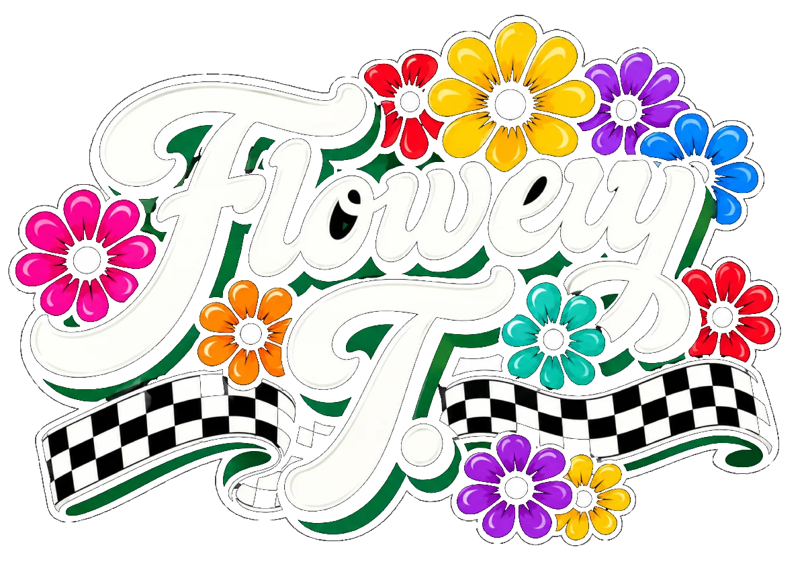

Flowery T.

- Ska
- Funk
- Reggae
Offbeat, Bläser und ganz viel Groove! Wir bringen jede Bühne zum Hüpfen, von der Kellerbar bis zum Open Air.
 Nächster Gig
Nächster Gig
News
Unsere Website ist online!
Endlich haben wir ein Zuhause im Netz. Hier findet ihr ab sofort alle Gigs, Songs und Fotos.
Wer sind wir?
Ein bunter Haufen Musikerinnen und Musiker mit einer gemeinsamen Mission: Tanzbeine in Bewegung bringen. Ska-Offbeat trifft Funk-Groove trifft Reggae-Gelassenheit.
Lerne die Band kennen